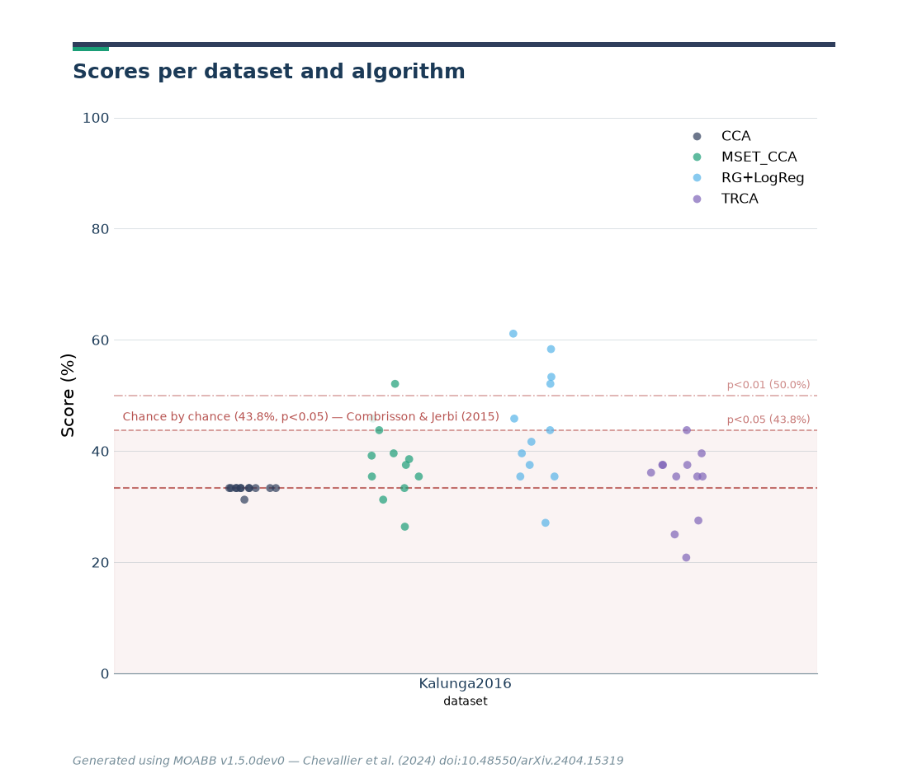

Note
Go to the end to download the full example code.
Cross-Subject SSVEP#
This example shows how to perform a cross-subject analysis on an SSVEP dataset. We will compare four pipelines :
Riemannian Geometry
CCA
TRCA
MsetCCA
We will use the SSVEP paradigm, which uses the AUC as metric.
# Authors: Sylvain Chevallier <sylvain.chevallier@uvsq.fr>
#
# License: BSD (3-clause)
import warnings
import matplotlib.pyplot as plt
import pandas as pd
from pyriemann.estimation import Covariances
from pyriemann.tangentspace import TangentSpace
from sklearn.linear_model import LogisticRegression
from sklearn.pipeline import make_pipeline
import moabb
import moabb.analysis.plotting as moabb_plt
from moabb.analysis.chance_level import chance_by_chance
from moabb.datasets import Kalunga2016
from moabb.evaluations import CrossSubjectEvaluation
from moabb.paradigms import SSVEP, FilterBankSSVEP
from moabb.pipelines import SSVEP_CCA, SSVEP_TRCA, ExtendedSSVEPSignal, SSVEP_MsetCCA
warnings.simplefilter(action="ignore", category=FutureWarning)
warnings.simplefilter(action="ignore", category=RuntimeWarning)
moabb.set_log_level("info")
Loading Dataset#
We will load the data from all 12 subjects of the SSVEP_Exo dataset
and compare four algorithms on this set. One of the algorithms could only
process class associated with a stimulation frequency, we will thus drop
the resting class. As the resting class is the last defined class, picking
the first three classes (out of four) allows to focus only on the stimulation
frequency.
Choose Paradigm#
We define the paradigms (SSVEP, SSVEP TRCA, SSVEP MsetCCA, and FilterBankSSVEP) and
use the dataset Kalunga2016. All 3 SSVEP paradigms applied a bandpass filter (10-42 Hz) on
the data, which include all stimuli frequencies and their first harmonics,
while the FilterBankSSVEP paradigm uses as many bandpass filters as
there are stimulation frequencies (here 3). For each stimulation frequency
the EEG is filtered with a 1 Hz-wide bandpass filter centered on the
frequency. This results in n_classes copies of the signal, filtered for each
class, as used in the filterbank motor imagery paradigms.
paradigm = SSVEP(fmin=10, fmax=42, n_classes=3)
paradigm_TRCA = SSVEP(fmin=10, fmax=42, n_classes=3)
paradigm_MSET_CCA = SSVEP(fmin=10, fmax=42, n_classes=3)
paradigm_fb = FilterBankSSVEP(filters=None, n_classes=3)
Classes are defined by the frequency of the stimulation, here we use the first three frequencies of the dataset, 13, 17, and 21 Hz. The evaluation function uses a LabelEncoder, transforming them to 0, 1, and 2.
Create Pipelines#
Pipelines must be a dict of sklearn pipeline transformer. The first pipeline uses Riemannian geometry, by building an extended covariance matrices from the signal filtered around the considered frequency and applying a logistic regression in the tangent plane. The second pipeline relies on the above defined CCA classifier. The third pipeline relies on the TRCA algorithm, and the fourth uses the MsetCCA algorithm. Both CCA based methods (i.e. CCA and MsetCCA) used 3 CCA components.
pipelines_fb = {}
pipelines_fb["RG+LogReg"] = make_pipeline(
ExtendedSSVEPSignal(),
Covariances(estimator="lwf"),
TangentSpace(),
LogisticRegression(solver="lbfgs"),
)
pipelines = {}
pipelines["CCA"] = make_pipeline(SSVEP_CCA(n_harmonics=2))
pipelines_TRCA = {}
pipelines_TRCA["TRCA"] = make_pipeline(SSVEP_TRCA(n_fbands=3))
pipelines_MSET_CCA = {}
pipelines_MSET_CCA["MSET_CCA"] = make_pipeline(SSVEP_MsetCCA())
Evaluation#
The evaluation will return a DataFrame containing an accuracy score for each subject / session of the dataset, and for each pipeline.
Results are saved into the database, so that if you add a new pipeline, it will not run again the evaluation unless a parameter has changed. Results can be overwritten if necessary.
overwrite = True # set to True if we want to overwrite cached results
evaluation = CrossSubjectEvaluation(
paradigm=paradigm, datasets=dataset, overwrite=overwrite
)
results = evaluation.process(pipelines)
0%| | 0.00/2.06M [00:00<?, ?B/s]
1%|▏ | 12.3k/2.06M [00:00<00:19, 105kB/s]
5%|█▊ | 97.3k/2.06M [00:00<00:05, 343kB/s]
10%|███▉ | 208k/2.06M [00:00<00:04, 457kB/s]
17%|██████▍ | 340k/2.06M [00:00<00:03, 555kB/s]
24%|█████████▍ | 495k/2.06M [00:00<00:02, 650kB/s]
33%|████████████▊ | 674k/2.06M [00:01<00:01, 743kB/s]
43%|████████████████▊ | 887k/2.06M [00:01<00:01, 861kB/s]
58%|█████████████████████▌ | 1.20M/2.06M [00:01<00:00, 1.10MB/s]
68%|█████████████████████████ | 1.39M/2.06M [00:01<00:00, 1.08MB/s]
79%|█████████████████████████████▏ | 1.62M/2.06M [00:01<00:00, 1.11MB/s]
96%|███████████████████████████████████▍ | 1.97M/2.06M [00:02<00:00, 1.32MB/s]
0%| | 0.00/2.06M [00:00<?, ?B/s]
100%|█████████████████████████████████████| 2.06M/2.06M [00:00<00:00, 12.7GB/s]
0%| | 0.00/2.82M [00:00<?, ?B/s]
0%|▏ | 12.3k/2.82M [00:00<00:30, 90.8kB/s]
2%|▌ | 46.1k/2.82M [00:00<00:14, 186kB/s]
6%|██▌ | 182k/2.82M [00:00<00:04, 529kB/s]
10%|████ | 295k/2.82M [00:00<00:03, 647kB/s]
17%|██████▍ | 465k/2.82M [00:00<00:03, 746kB/s]
24%|█████████▍ | 677k/2.82M [00:00<00:02, 880kB/s]
34%|████████████▉ | 955k/2.82M [00:01<00:01, 1.08MB/s]
41%|███████████████▏ | 1.15M/2.82M [00:01<00:01, 1.06MB/s]
50%|██████████████████▎ | 1.40M/2.82M [00:01<00:01, 1.13MB/s]
57%|█████████████████████▏ | 1.61M/2.82M [00:01<00:01, 1.12MB/s]
68%|█████████████████████████ | 1.90M/2.82M [00:01<00:00, 1.24MB/s]
75%|███████████████████████████▊ | 2.12M/2.82M [00:02<00:00, 1.20MB/s]
84%|███████████████████████████████▏ | 2.38M/2.82M [00:02<00:00, 1.25MB/s]
92%|██████████████████████████████████ | 2.59M/2.82M [00:02<00:00, 1.20MB/s]
0%| | 0.00/2.82M [00:00<?, ?B/s]
100%|█████████████████████████████████████| 2.82M/2.82M [00:00<00:00, 11.3GB/s]
0%| | 0.00/2.58M [00:00<?, ?B/s]
0%|▏ | 11.3k/2.58M [00:00<00:29, 87.4kB/s]
3%|█▏ | 81.9k/2.58M [00:00<00:09, 273kB/s]
7%|██▌ | 173k/2.58M [00:00<00:05, 427kB/s]
12%|████▋ | 314k/2.58M [00:00<00:04, 557kB/s]
17%|██████▋ | 443k/2.58M [00:00<00:02, 737kB/s]
23%|████████▊ | 582k/2.58M [00:00<00:02, 723kB/s]
27%|██████████▌ | 696k/2.58M [00:01<00:02, 819kB/s]
32%|████████████▎ | 818k/2.58M [00:01<00:01, 918kB/s]
38%|██████████████▌ | 988k/2.58M [00:01<00:01, 1.12MB/s]
43%|████████████████▎ | 1.11M/2.58M [00:01<00:01, 904kB/s]
52%|███████████████████ | 1.33M/2.58M [00:01<00:01, 1.21MB/s]
58%|█████████████████████▎ | 1.49M/2.58M [00:01<00:00, 1.30MB/s]
64%|███████████████████████▊ | 1.66M/2.58M [00:01<00:00, 1.12MB/s]
72%|██████████████████████████▌ | 1.86M/2.58M [00:01<00:00, 1.31MB/s]
78%|████████████████████████████▋ | 2.00M/2.58M [00:02<00:00, 1.35MB/s]
83%|██████████████████████████████▊ | 2.15M/2.58M [00:02<00:00, 1.38MB/s]
89%|████████████████████████████████▉ | 2.30M/2.58M [00:02<00:00, 1.40MB/s]
95%|███████████████████████████████████ | 2.45M/2.58M [00:02<00:00, 1.42MB/s]
0%| | 0.00/2.58M [00:00<?, ?B/s]
100%|█████████████████████████████████████| 2.58M/2.58M [00:00<00:00, 9.69GB/s]
0%| | 0.00/2.14M [00:00<?, ?B/s]
1%|▏ | 12.3k/2.14M [00:00<00:21, 101kB/s]
5%|█▋ | 98.3k/2.14M [00:00<00:05, 341kB/s]
10%|████ | 224k/2.14M [00:00<00:03, 498kB/s]
15%|█████▉ | 329k/2.14M [00:00<00:03, 516kB/s]
22%|████████▋ | 474k/2.14M [00:00<00:02, 605kB/s]
30%|███████████▌ | 638k/2.14M [00:01<00:02, 690kB/s]
37%|██████████████▎ | 784k/2.14M [00:01<00:01, 714kB/s]
46%|█████████████████▊ | 981k/2.14M [00:01<00:01, 811kB/s]
50%|██████████████████▊ | 1.06M/2.14M [00:01<00:01, 810kB/s]
57%|█████████████████████▊ | 1.23M/2.14M [00:01<00:01, 825kB/s]
68%|█████████████████████████▊ | 1.46M/2.14M [00:01<00:00, 941kB/s]
79%|█████████████████████████████ | 1.68M/2.14M [00:02<00:00, 1.02MB/s]
91%|█████████████████████████████████▌ | 1.95M/2.14M [00:02<00:00, 1.12MB/s]
0%| | 0.00/2.14M [00:00<?, ?B/s]
100%|█████████████████████████████████████| 2.14M/2.14M [00:00<00:00, 8.11GB/s]
0%| | 0.00/2.27M [00:00<?, ?B/s]
1%|▏ | 12.3k/2.27M [00:00<00:21, 103kB/s]
4%|█▌ | 92.2k/2.27M [00:00<00:06, 329kB/s]
10%|███▉ | 227k/2.27M [00:00<00:03, 526kB/s]
20%|███████▊ | 454k/2.27M [00:00<00:02, 808kB/s]
31%|████████████ | 699k/2.27M [00:00<00:01, 994kB/s]
39%|██████████████▉ | 895k/2.27M [00:01<00:01, 1.01MB/s]
47%|█████████████████▏ | 1.06M/2.27M [00:01<00:01, 1.13MB/s]
52%|███████████████████▋ | 1.18M/2.27M [00:01<00:01, 962kB/s]
59%|██████████████████████▎ | 1.34M/2.27M [00:01<00:01, 915kB/s]
67%|█████████████████████████▋ | 1.53M/2.27M [00:01<00:00, 949kB/s]
72%|███████████████████████████▎ | 1.63M/2.27M [00:01<00:00, 955kB/s]
83%|██████████████████████████████▌ | 1.88M/2.27M [00:02<00:00, 1.07MB/s]
93%|██████████████████████████████████▌ | 2.12M/2.27M [00:02<00:00, 1.15MB/s]
0%| | 0.00/2.27M [00:00<?, ?B/s]
100%|█████████████████████████████████████| 2.27M/2.27M [00:00<00:00, 8.63GB/s]
0%| | 0.00/2.13M [00:00<?, ?B/s]
1%|▏ | 11.3k/2.13M [00:00<00:22, 95.9kB/s]
4%|█▋ | 92.2k/2.13M [00:00<00:06, 324kB/s]
10%|████ | 219k/2.13M [00:00<00:03, 576kB/s]
15%|█████▊ | 317k/2.13M [00:00<00:02, 605kB/s]
22%|████████▌ | 465k/2.13M [00:00<00:02, 672kB/s]
30%|███████████▌ | 628k/2.13M [00:00<00:02, 737kB/s]
33%|█████████████ | 710k/2.13M [00:01<00:01, 753kB/s]
40%|███████████████▋ | 857k/2.13M [00:01<00:01, 759kB/s]
51%|███████████████████▍ | 1.09M/2.13M [00:01<00:01, 909kB/s]
61%|███████████████████████▏ | 1.30M/2.13M [00:01<00:00, 970kB/s]
73%|██████████████████████████▊ | 1.54M/2.13M [00:01<00:00, 1.07MB/s]
84%|███████████████████████████████ | 1.79M/2.13M [00:02<00:00, 1.13MB/s]
99%|████████████████████████████████████▌| 2.10M/2.13M [00:02<00:00, 1.28MB/s]
0%| | 0.00/2.13M [00:00<?, ?B/s]
100%|█████████████████████████████████████| 2.13M/2.13M [00:00<00:00, 16.0GB/s]
0%| | 0.00/2.29M [00:00<?, ?B/s]
0%|▏ | 11.3k/2.29M [00:00<00:24, 95.0kB/s]
4%|█▍ | 86.0k/2.29M [00:00<00:07, 302kB/s]
8%|███▏ | 188k/2.29M [00:00<00:05, 419kB/s]
17%|██████▌ | 384k/2.29M [00:00<00:02, 667kB/s]
24%|█████████▎ | 547k/2.29M [00:00<00:02, 735kB/s]
32%|████████████▋ | 743k/2.29M [00:01<00:01, 835kB/s]
42%|████████████████▏ | 955k/2.29M [00:01<00:01, 924kB/s]
50%|███████████████████ | 1.15M/2.29M [00:01<00:01, 955kB/s]
61%|██████████████████████▌ | 1.40M/2.29M [00:01<00:00, 1.06MB/s]
72%|██████████████████████████▍ | 1.64M/2.29M [00:01<00:00, 1.12MB/s]
82%|██████████████████████████████▏ | 1.87M/2.29M [00:02<00:00, 1.14MB/s]
94%|██████████████████████████████████▋ | 2.15M/2.29M [00:02<00:00, 1.23MB/s]
0%| | 0.00/2.29M [00:00<?, ?B/s]
100%|█████████████████████████████████████| 2.29M/2.29M [00:00<00:00, 15.3GB/s]
0%| | 0.00/2.06M [00:00<?, ?B/s]
0%|▏ | 10.2k/2.06M [00:00<00:24, 84.1kB/s]
4%|█▋ | 89.1k/2.06M [00:00<00:06, 310kB/s]
10%|████ | 216k/2.06M [00:00<00:03, 484kB/s]
17%|██████▍ | 340k/2.06M [00:00<00:02, 624kB/s]
22%|████████▌ | 451k/2.06M [00:00<00:02, 662kB/s]
34%|████████████▉ | 702k/2.06M [00:00<00:01, 1.12MB/s]
43%|████████████████▍ | 892k/2.06M [00:01<00:01, 1.07MB/s]
59%|█████████████████████▉ | 1.22M/2.06M [00:01<00:00, 1.30MB/s]
70%|██████████████████████████ | 1.45M/2.06M [00:01<00:00, 1.26MB/s]
84%|███████████████████████████████ | 1.73M/2.06M [00:01<00:00, 1.32MB/s]
97%|███████████████████████████████████▋ | 1.99M/2.06M [00:01<00:00, 1.33MB/s]
0%| | 0.00/2.06M [00:00<?, ?B/s]
100%|█████████████████████████████████████| 2.06M/2.06M [00:00<00:00, 13.8GB/s]
0%| | 0.00/2.12M [00:00<?, ?B/s]
1%|▏ | 12.3k/2.12M [00:00<00:24, 87.2kB/s]
2%|▋ | 35.8k/2.12M [00:00<00:13, 152kB/s]
8%|███▎ | 180k/2.12M [00:00<00:03, 519kB/s]
13%|█████ | 272k/2.12M [00:00<00:02, 619kB/s]
17%|██████▌ | 356k/2.12M [00:00<00:03, 559kB/s]
25%|█████████▉ | 538k/2.12M [00:00<00:02, 713kB/s]
34%|█████████████▏ | 718k/2.12M [00:01<00:01, 795kB/s]
41%|███████████████▉ | 864k/2.12M [00:01<00:01, 785kB/s]
48%|██████████████████▍ | 1.03M/2.12M [00:01<00:01, 809kB/s]
59%|██████████████████████▏ | 1.24M/2.12M [00:01<00:00, 903kB/s]
69%|██████████████████████████ | 1.45M/2.12M [00:01<00:00, 966kB/s]
77%|█████████████████████████████▎ | 1.63M/2.12M [00:02<00:00, 958kB/s]
88%|████████████████████████████████▍ | 1.86M/2.12M [00:02<00:00, 1.03MB/s]
98%|████████████████████████████████████▏| 2.07M/2.12M [00:02<00:00, 1.05MB/s]
0%| | 0.00/2.12M [00:00<?, ?B/s]
100%|█████████████████████████████████████| 2.12M/2.12M [00:00<00:00, 13.3GB/s]
0%| | 0.00/2.47M [00:00<?, ?B/s]
0%| | 1.02k/2.47M [00:00<04:23, 9.39kB/s]
3%|█▎ | 81.9k/2.47M [00:00<00:06, 385kB/s]
7%|██▌ | 164k/2.47M [00:00<00:04, 473kB/s]
13%|████▉ | 311k/2.47M [00:00<00:03, 620kB/s]
20%|███████▊ | 492k/2.47M [00:00<00:02, 759kB/s]
28%|███████████ | 703k/2.47M [00:00<00:01, 894kB/s]
40%|███████████████ | 982k/2.47M [00:01<00:01, 1.10MB/s]
47%|█████████████████▎ | 1.16M/2.47M [00:01<00:01, 1.23MB/s]
54%|███████████████████▊ | 1.33M/2.47M [00:01<00:01, 1.11MB/s]
60%|██████████████████████▎ | 1.49M/2.47M [00:01<00:00, 1.03MB/s]
70%|█████████████████████████▉ | 1.73M/2.47M [00:01<00:00, 1.12MB/s]
79%|█████████████████████████████▏ | 1.95M/2.47M [00:01<00:00, 1.13MB/s]
85%|███████████████████████████████▌ | 2.11M/2.47M [00:02<00:00, 1.04MB/s]
94%|██████████████████████████████████▊ | 2.32M/2.47M [00:02<00:00, 1.06MB/s]
0%| | 0.00/2.47M [00:00<?, ?B/s]
100%|█████████████████████████████████████| 2.47M/2.47M [00:00<00:00, 9.09GB/s]
0%| | 0.00/2.71M [00:00<?, ?B/s]
0%|▏ | 11.3k/2.71M [00:00<00:29, 90.8kB/s]
3%|█▎ | 90.1k/2.71M [00:00<00:06, 388kB/s]
5%|█▉ | 137k/2.71M [00:00<00:07, 350kB/s]
8%|███▎ | 230k/2.71M [00:00<00:05, 414kB/s]
14%|█████▎ | 374k/2.71M [00:00<00:04, 548kB/s]
24%|████████▉ | 640k/2.71M [00:00<00:02, 1.04MB/s]
34%|█████████████ | 931k/2.71M [00:01<00:01, 1.23MB/s]
54%|███████████████████▊ | 1.46M/2.71M [00:01<00:00, 2.13MB/s]
75%|███████████████████████████▊ | 2.04M/2.71M [00:01<00:00, 2.51MB/s]
91%|█████████████████████████████████▊ | 2.48M/2.71M [00:01<00:00, 2.91MB/s]
0%| | 0.00/2.71M [00:00<?, ?B/s]
100%|█████████████████████████████████████| 2.71M/2.71M [00:00<00:00, 17.1GB/s]
0%| | 0.00/2.33M [00:00<?, ?B/s]
0%|▏ | 11.3k/2.33M [00:00<00:32, 71.5kB/s]
4%|█▌ | 97.3k/2.33M [00:00<00:06, 336kB/s]
8%|███▏ | 190k/2.33M [00:00<00:04, 506kB/s]
13%|█████▏ | 311k/2.33M [00:00<00:03, 567kB/s]
18%|███████ | 419k/2.33M [00:00<00:02, 699kB/s]
25%|█████████▉ | 591k/2.33M [00:00<00:02, 776kB/s]
32%|████████████▋ | 755k/2.33M [00:01<00:01, 803kB/s]
42%|████████████████▏ | 967k/2.33M [00:01<00:01, 905kB/s]
49%|██████████████████▍ | 1.13M/2.33M [00:01<00:01, 889kB/s]
60%|██████████████████████▏ | 1.39M/2.33M [00:01<00:00, 1.04MB/s]
72%|██████████████████████████▊ | 1.69M/2.33M [00:01<00:00, 1.40MB/s]
79%|█████████████████████████████▍ | 1.85M/2.33M [00:01<00:00, 1.21MB/s]
87%|████████████████████████████████▎ | 2.03M/2.33M [00:02<00:00, 1.07MB/s]
92%|██████████████████████████████████▏ | 2.15M/2.33M [00:02<00:00, 1.10MB/s]
99%|█████████████████████████████████████▍| 2.29M/2.33M [00:02<00:00, 971kB/s]
0%| | 0.00/2.33M [00:00<?, ?B/s]
100%|█████████████████████████████████████| 2.33M/2.33M [00:00<00:00, 17.1GB/s]
0%| | 0.00/2.27M [00:00<?, ?B/s]
0%|▏ | 11.3k/2.27M [00:00<00:25, 89.1kB/s]
3%|█▎ | 76.8k/2.27M [00:00<00:07, 275kB/s]
6%|██▏ | 126k/2.27M [00:00<00:06, 340kB/s]
12%|████▋ | 273k/2.27M [00:00<00:02, 708kB/s]
16%|██████▎ | 371k/2.27M [00:00<00:03, 610kB/s]
25%|█████████▋ | 567k/2.27M [00:00<00:02, 770kB/s]
29%|███████████▏ | 649k/2.27M [00:01<00:02, 773kB/s]
33%|████████████▊ | 748k/2.27M [00:01<00:01, 819kB/s]
44%|█████████████████ | 992k/2.27M [00:01<00:01, 998kB/s]
51%|███████████████████▎ | 1.16M/2.27M [00:01<00:01, 944kB/s]
58%|██████████████████████ | 1.32M/2.27M [00:01<00:01, 910kB/s]
67%|█████████████████████████▌ | 1.53M/2.27M [00:01<00:00, 969kB/s]
75%|████████████████████████████▋ | 1.71M/2.27M [00:02<00:00, 933kB/s]
83%|███████████████████████████████▋ | 1.89M/2.27M [00:02<00:00, 921kB/s]
88%|█████████████████████████████████▎ | 1.99M/2.27M [00:02<00:00, 892kB/s]
92%|██████████████████████████████████▉ | 2.09M/2.27M [00:02<00:00, 906kB/s]
0%| | 0.00/2.27M [00:00<?, ?B/s]
100%|█████████████████████████████████████| 2.27M/2.27M [00:00<00:00, 8.29GB/s]
0%| | 0.00/1.99M [00:00<?, ?B/s]
0%| | 1.02k/1.99M [00:00<03:43, 8.90kB/s]
5%|█▋ | 90.1k/1.99M [00:00<00:05, 330kB/s]
11%|████▎ | 218k/1.99M [00:00<00:03, 499kB/s]
19%|███████▎ | 373k/1.99M [00:00<00:02, 625kB/s]
26%|██████████ | 516k/1.99M [00:00<00:02, 670kB/s]
32%|████████████▋ | 646k/1.99M [00:01<00:02, 672kB/s]
39%|███████████████▏ | 777k/1.99M [00:01<00:01, 674kB/s]
46%|█████████████████▊ | 908k/1.99M [00:01<00:01, 677kB/s]
53%|████████████████████▏ | 1.06M/1.99M [00:01<00:01, 700kB/s]
61%|███████████████████████▎ | 1.22M/1.99M [00:01<00:01, 745kB/s]
68%|█████████████████████████▊ | 1.35M/1.99M [00:02<00:00, 726kB/s]
79%|█████████████████████████████▊ | 1.56M/1.99M [00:02<00:00, 840kB/s]
86%|████████████████████████████████▋ | 1.71M/1.99M [00:02<00:00, 816kB/s]
94%|███████████████████████████████████▊ | 1.87M/1.99M [00:02<00:00, 826kB/s]
0%| | 0.00/1.99M [00:00<?, ?B/s]
100%|█████████████████████████████████████| 1.99M/1.99M [00:00<00:00, 7.24GB/s]
0%| | 0.00/2.98M [00:00<?, ?B/s]
0%| | 1.02k/2.98M [00:00<06:02, 8.23kB/s]
3%|█▏ | 95.2k/2.98M [00:00<00:08, 332kB/s]
7%|██▉ | 222k/2.98M [00:00<00:04, 645kB/s]
10%|███▊ | 296k/2.98M [00:00<00:03, 674kB/s]
13%|████▉ | 379k/2.98M [00:00<00:04, 556kB/s]
16%|██████ | 468k/2.98M [00:00<00:03, 642kB/s]
22%|████████▌ | 652k/2.98M [00:00<00:02, 965kB/s]
26%|██████████▏ | 775k/2.98M [00:01<00:02, 816kB/s]
30%|███████████▋ | 898k/2.98M [00:01<00:02, 914kB/s]
35%|█████████████▏ | 1.04M/2.98M [00:01<00:02, 828kB/s]
40%|███████████████ | 1.18M/2.98M [00:01<00:01, 973kB/s]
44%|████████████████▊ | 1.31M/2.98M [00:01<00:01, 853kB/s]
47%|██████████████████ | 1.42M/2.98M [00:01<00:01, 889kB/s]
53%|███████████████████▌ | 1.57M/2.98M [00:01<00:01, 1.05MB/s]
57%|█████████████████████▌ | 1.69M/2.98M [00:02<00:01, 867kB/s]
63%|███████████████████████▏ | 1.87M/2.98M [00:02<00:01, 1.07MB/s]
67%|█████████████████████████▍ | 1.99M/2.98M [00:02<00:01, 897kB/s]
73%|██████████████████████████▉ | 2.17M/2.98M [00:02<00:00, 1.08MB/s]
77%|█████████████████████████████▎ | 2.30M/2.98M [00:02<00:00, 915kB/s]
81%|██████████████████████████████▋ | 2.40M/2.98M [00:02<00:00, 947kB/s]
84%|████████████████████████████████ | 2.51M/2.98M [00:02<00:00, 976kB/s]
90%|█████████████████████████████████▍ | 2.70M/2.98M [00:03<00:00, 1.20MB/s]
95%|████████████████████████████████████ | 2.83M/2.98M [00:03<00:00, 976kB/s]
99%|████████████████████████████████████▍| 2.94M/2.98M [00:03<00:00, 1.01MB/s]
0%| | 0.00/2.98M [00:00<?, ?B/s]
100%|█████████████████████████████████████| 2.98M/2.98M [00:00<00:00, 21.1GB/s]
0%| | 0.00/2.72M [00:00<?, ?B/s]
0%|▏ | 13.3k/2.72M [00:00<00:24, 113kB/s]
4%|█▎ | 97.3k/2.72M [00:00<00:07, 340kB/s]
9%|███▌ | 250k/2.72M [00:00<00:04, 568kB/s]
16%|██████▎ | 439k/2.72M [00:00<00:03, 740kB/s]
20%|███████▉ | 554k/2.72M [00:00<00:03, 686kB/s]
28%|██████████▊ | 751k/2.72M [00:01<00:02, 803kB/s]
33%|████████████▉ | 897k/2.72M [00:01<00:02, 789kB/s]
41%|███████████████▊ | 1.13M/2.72M [00:01<00:01, 919kB/s]
49%|██████████████████▋ | 1.34M/2.72M [00:01<00:01, 977kB/s]
58%|█████████████████████▎ | 1.57M/2.72M [00:01<00:01, 1.04MB/s]
66%|████████████████████████▎ | 1.78M/2.72M [00:02<00:00, 1.06MB/s]
73%|██████████████████████████▉ | 1.98M/2.72M [00:02<00:00, 1.04MB/s]
79%|█████████████████████████████▏ | 2.14M/2.72M [00:02<00:00, 1.15MB/s]
94%|██████████████████████████████████▋ | 2.55M/2.72M [00:02<00:00, 1.48MB/s]
0%| | 0.00/2.72M [00:00<?, ?B/s]
100%|█████████████████████████████████████| 2.72M/2.72M [00:00<00:00, 15.5GB/s]
0%| | 0.00/2.74M [00:00<?, ?B/s]
0%|▏ | 12.3k/2.74M [00:00<00:24, 109kB/s]
4%|█▎ | 96.3k/2.74M [00:00<00:07, 337kB/s]
7%|██▊ | 201k/2.74M [00:00<00:05, 435kB/s]
11%|████▍ | 309k/2.74M [00:00<00:03, 610kB/s]
15%|█████▊ | 407k/2.74M [00:00<00:03, 642kB/s]
21%|████████▏ | 575k/2.74M [00:00<00:02, 731kB/s]
29%|███████████▏ | 788k/2.74M [00:01<00:02, 860kB/s]
38%|██████████████ | 1.04M/2.74M [00:01<00:01, 1.21MB/s]
43%|███████████████▉ | 1.18M/2.74M [00:01<00:01, 1.03MB/s]
49%|█████████████████▉ | 1.33M/2.74M [00:01<00:01, 1.12MB/s]
55%|████████████████████▍ | 1.51M/2.74M [00:01<00:00, 1.28MB/s]
60%|██████████████████████▎ | 1.65M/2.74M [00:01<00:01, 1.03MB/s]
67%|████████████████████████▋ | 1.83M/2.74M [00:01<00:00, 1.18MB/s]
72%|██████████████████████████▌ | 1.97M/2.74M [00:02<00:00, 1.00MB/s]
77%|████████████████████████████▌ | 2.11M/2.74M [00:02<00:00, 1.11MB/s]
83%|██████████████████████████████▊ | 2.28M/2.74M [00:02<00:00, 1.00MB/s]
89%|█████████████████████████████████▉ | 2.44M/2.74M [00:02<00:00, 943kB/s]
98%|████████████████████████████████████▎| 2.69M/2.74M [00:02<00:00, 1.26MB/s]
0%| | 0.00/2.74M [00:00<?, ?B/s]
100%|█████████████████████████████████████| 2.74M/2.74M [00:00<00:00, 18.9GB/s]
0%| | 0.00/2.74M [00:00<?, ?B/s]
0%| | 5.12k/2.74M [00:00<01:01, 44.4kB/s]
4%|█▎ | 98.3k/2.74M [00:00<00:07, 356kB/s]
8%|███ | 211k/2.74M [00:00<00:05, 472kB/s]
12%|████▋ | 327k/2.74M [00:00<00:04, 527kB/s]
18%|███████▏ | 505k/2.74M [00:00<00:02, 758kB/s]
23%|█████████ | 635k/2.74M [00:00<00:02, 790kB/s]
32%|████████████▌ | 881k/2.74M [00:01<00:01, 969kB/s]
39%|██████████████▉ | 1.08M/2.74M [00:01<00:01, 982kB/s]
45%|████████████████▊ | 1.24M/2.74M [00:01<00:01, 1.12MB/s]
51%|██████████████████▉ | 1.40M/2.74M [00:01<00:01, 1.02MB/s]
59%|█████████████████████▊ | 1.62M/2.74M [00:01<00:01, 1.05MB/s]
68%|█████████████████████████▏ | 1.86M/2.74M [00:02<00:00, 1.12MB/s]
74%|███████████████████████████▍ | 2.03M/2.74M [00:02<00:00, 1.03MB/s]
81%|██████████████████████████████ | 2.22M/2.74M [00:02<00:00, 1.03MB/s]
92%|██████████████████████████████████ | 2.52M/2.74M [00:02<00:00, 1.18MB/s]
98%|████████████████████████████████████▏| 2.68M/2.74M [00:02<00:00, 1.08MB/s]
0%| | 0.00/2.74M [00:00<?, ?B/s]
100%|█████████████████████████████████████| 2.74M/2.74M [00:00<00:00, 14.8GB/s]
0%| | 0.00/2.73M [00:00<?, ?B/s]
0%|▏ | 11.3k/2.73M [00:00<00:31, 87.0kB/s]
4%|█▎ | 98.3k/2.73M [00:00<00:07, 336kB/s]
7%|██▉ | 203k/2.73M [00:00<00:05, 439kB/s]
13%|█████ | 355k/2.73M [00:00<00:03, 729kB/s]
17%|██████▋ | 466k/2.73M [00:00<00:03, 669kB/s]
23%|█████████ | 630k/2.73M [00:00<00:02, 739kB/s]
29%|███████████▎ | 794k/2.73M [00:01<00:02, 777kB/s]
36%|█████████████▉ | 973k/2.73M [00:01<00:02, 828kB/s]
43%|████████████████▌ | 1.19M/2.73M [00:01<00:01, 917kB/s]
50%|██████████████████▌ | 1.37M/2.73M [00:01<00:01, 1.09MB/s]
55%|████████████████████▊ | 1.50M/2.73M [00:01<00:01, 943kB/s]
63%|███████████████████████▊ | 1.71M/2.73M [00:02<00:01, 997kB/s]
69%|██████████████████████████▎ | 1.89M/2.73M [00:02<00:00, 978kB/s]
77%|████████████████████████████▍ | 2.10M/2.73M [00:02<00:00, 1.02MB/s]
84%|███████████████████████████████▊ | 2.28M/2.73M [00:02<00:00, 992kB/s]
90%|██████████████████████████████████▎ | 2.46M/2.73M [00:02<00:00, 975kB/s]
99%|████████████████████████████████████▋| 2.71M/2.73M [00:03<00:00, 1.06MB/s]
0%| | 0.00/2.73M [00:00<?, ?B/s]
100%|█████████████████████████████████████| 2.73M/2.73M [00:00<00:00, 15.8GB/s]
0%| | 0.00/3.97M [00:00<?, ?B/s]
0%|▏ | 13.3k/3.97M [00:00<00:37, 107kB/s]
2%|▊ | 86.0k/3.97M [00:00<00:13, 288kB/s]
5%|█▉ | 203k/3.97M [00:00<00:06, 582kB/s]
8%|███▏ | 331k/3.97M [00:00<00:04, 808kB/s]
11%|████▏ | 423k/3.97M [00:00<00:05, 643kB/s]
14%|█████▍ | 553k/3.97M [00:00<00:04, 812kB/s]
18%|██████▊ | 698k/3.97M [00:00<00:03, 983kB/s]
20%|███████▋ | 809k/3.97M [00:01<00:03, 1.01MB/s]
23%|████████▉ | 932k/3.97M [00:01<00:02, 1.07MB/s]
26%|█████████▋ | 1.05M/3.97M [00:01<00:02, 1.08MB/s]
30%|███████████▏ | 1.17M/3.97M [00:01<00:03, 886kB/s]
33%|████████████▍ | 1.29M/3.97M [00:01<00:02, 967kB/s]
36%|█████████████▍ | 1.44M/3.97M [00:01<00:02, 1.09MB/s]
40%|██████████████▊ | 1.60M/3.97M [00:01<00:01, 1.22MB/s]
43%|████████████████▌ | 1.73M/3.97M [00:01<00:02, 979kB/s]
49%|██████████████████ | 1.94M/3.97M [00:02<00:01, 1.26MB/s]
53%|███████████████████▌ | 2.11M/3.97M [00:02<00:01, 1.09MB/s]
56%|████████████████████▊ | 2.23M/3.97M [00:02<00:01, 1.12MB/s]
61%|██████████████████████▍ | 2.41M/3.97M [00:02<00:01, 1.27MB/s]
64%|███████████████████████▋ | 2.55M/3.97M [00:02<00:01, 1.04MB/s]
68%|█████████████████████████▉ | 2.71M/3.97M [00:02<00:01, 964kB/s]
71%|██████████████████████████▉ | 2.82M/3.97M [00:02<00:01, 989kB/s]
74%|███████████████████████████▍ | 2.94M/3.97M [00:03<00:00, 1.04MB/s]
80%|█████████████████████████████▌ | 3.17M/3.97M [00:03<00:00, 1.35MB/s]
86%|███████████████████████████████▋ | 3.40M/3.97M [00:03<00:00, 1.27MB/s]
90%|█████████████████████████████████ | 3.56M/3.97M [00:03<00:00, 1.35MB/s]
93%|██████████████████████████████████▍ | 3.70M/3.97M [00:03<00:00, 1.37MB/s]
97%|███████████████████████████████████▊ | 3.84M/3.97M [00:03<00:00, 1.09MB/s]
100%|█████████████████████████████████████▉| 3.97M/3.97M [00:03<00:00, 919kB/s]
0%| | 0.00/3.97M [00:00<?, ?B/s]
100%|█████████████████████████████████████| 3.97M/3.97M [00:00<00:00, 29.6GB/s]
0%| | 0.00/2.72M [00:00<?, ?B/s]
0%| | 1.02k/2.72M [00:00<04:58, 9.11kB/s]
4%|█▎ | 98.3k/2.72M [00:00<00:07, 370kB/s]
8%|███▎ | 228k/2.72M [00:00<00:03, 693kB/s]
11%|████▎ | 304k/2.72M [00:00<00:03, 648kB/s]
14%|█████▎ | 373k/2.72M [00:00<00:03, 655kB/s]
17%|██████▌ | 460k/2.72M [00:00<00:03, 705kB/s]
22%|████████▍ | 591k/2.72M [00:00<00:02, 883kB/s]
28%|██████████▊ | 754k/2.72M [00:01<00:02, 872kB/s]
35%|█████████████▌ | 950k/2.72M [00:01<00:01, 942kB/s]
41%|███████████████▌ | 1.11M/2.72M [00:01<00:01, 892kB/s]
45%|████████████████▉ | 1.21M/2.72M [00:01<00:01, 906kB/s]
51%|██████████████████▉ | 1.39M/2.72M [00:01<00:01, 1.11MB/s]
55%|█████████████████████ | 1.51M/2.72M [00:01<00:01, 916kB/s]
62%|███████████████████████▌ | 1.69M/2.72M [00:02<00:01, 918kB/s]
72%|██████████████████████████▍ | 1.95M/2.72M [00:02<00:00, 1.07MB/s]
81%|█████████████████████████████▊ | 2.19M/2.72M [00:02<00:00, 1.15MB/s]
88%|████████████████████████████████▍ | 2.39M/2.72M [00:02<00:00, 1.12MB/s]
96%|███████████████████████████████████▎ | 2.60M/2.72M [00:02<00:00, 1.31MB/s]
0%| | 0.00/2.72M [00:00<?, ?B/s]
100%|█████████████████████████████████████| 2.72M/2.72M [00:00<00:00, 9.70GB/s]
0%| | 0.00/2.82M [00:00<?, ?B/s]
0%|▏ | 13.3k/2.82M [00:00<00:25, 111kB/s]
3%|█▎ | 97.3k/2.82M [00:00<00:08, 339kB/s]
7%|██▌ | 184k/2.82M [00:00<00:06, 396kB/s]
11%|████▍ | 322k/2.82M [00:00<00:04, 527kB/s]
17%|██████▊ | 492k/2.82M [00:00<00:03, 660kB/s]
26%|█████████▉ | 720k/2.82M [00:01<00:02, 839kB/s]
34%|█████████████▎ | 966k/2.82M [00:01<00:01, 982kB/s]
41%|███████████████▋ | 1.16M/2.82M [00:01<00:01, 994kB/s]
50%|██████████████████▍ | 1.41M/2.82M [00:01<00:01, 1.08MB/s]
59%|█████████████████████▋ | 1.65M/2.82M [00:01<00:01, 1.14MB/s]
65%|████████████████████████ | 1.83M/2.82M [00:02<00:00, 1.07MB/s]
71%|██████████████████████████▏ | 2.00M/2.82M [00:02<00:00, 1.18MB/s]
76%|████████████████████████████▏ | 2.14M/2.82M [00:02<00:00, 1.24MB/s]
82%|██████████████████████████████▍ | 2.32M/2.82M [00:02<00:00, 1.36MB/s]
90%|█████████████████████████████████▎ | 2.54M/2.82M [00:02<00:00, 1.25MB/s]
0%| | 0.00/2.82M [00:00<?, ?B/s]
100%|█████████████████████████████████████| 2.82M/2.82M [00:00<00:00, 10.2GB/s]
0%| | 0.00/2.77M [00:00<?, ?B/s]
0%| | 1.02k/2.77M [00:00<05:31, 8.36kB/s]
4%|█▎ | 97.3k/2.77M [00:00<00:07, 351kB/s]
8%|███ | 216k/2.77M [00:00<00:05, 486kB/s]
13%|█████ | 357k/2.77M [00:00<00:04, 591kB/s]
20%|███████▊ | 552k/2.77M [00:00<00:02, 751kB/s]
23%|█████████▏ | 650k/2.77M [00:00<00:02, 798kB/s]
32%|████████████▎ | 879k/2.77M [00:01<00:02, 945kB/s]
38%|██████████████▎ | 1.04M/2.77M [00:01<00:01, 913kB/s]
44%|████████████████▊ | 1.22M/2.77M [00:01<00:01, 917kB/s]
55%|████████████████████▎ | 1.52M/2.77M [00:01<00:01, 1.12MB/s]
62%|██████████████████████▉ | 1.71M/2.77M [00:01<00:00, 1.09MB/s]
72%|██████████████████████████▊ | 2.01M/2.77M [00:02<00:00, 1.22MB/s]
80%|█████████████████████████████▍ | 2.20M/2.77M [00:02<00:00, 1.16MB/s]
85%|███████████████████████████████▌ | 2.37M/2.77M [00:02<00:00, 1.07MB/s]
99%|████████████████████████████████████▋| 2.74M/2.77M [00:02<00:00, 1.34MB/s]
0%| | 0.00/2.77M [00:00<?, ?B/s]
100%|█████████████████████████████████████| 2.77M/2.77M [00:00<00:00, 19.8GB/s]
0%| | 0.00/2.72M [00:00<?, ?B/s]
0%|▏ | 11.3k/2.72M [00:00<00:27, 96.7kB/s]
3%|█▏ | 87.0k/2.72M [00:00<00:06, 389kB/s]
5%|█▉ | 134k/2.72M [00:00<00:07, 357kB/s]
12%|████▌ | 315k/2.72M [00:00<00:03, 647kB/s]
19%|███████▍ | 518k/2.72M [00:00<00:02, 822kB/s]
26%|██████████▎ | 715k/2.72M [00:00<00:02, 903kB/s]
34%|█████████████▎ | 928k/2.72M [00:01<00:01, 982kB/s]
42%|███████████████▌ | 1.14M/2.72M [00:01<00:01, 1.03MB/s]
49%|██████████████████▏ | 1.34M/2.72M [00:01<00:01, 1.03MB/s]
59%|█████████████████████▋ | 1.60M/2.72M [00:01<00:00, 1.14MB/s]
67%|████████████████████████▋ | 1.81M/2.72M [00:01<00:00, 1.14MB/s]
76%|███████████████████████████▉ | 2.06M/2.72M [00:02<00:00, 1.19MB/s]
89%|█████████████████████████████████ | 2.43M/2.72M [00:02<00:00, 1.44MB/s]
98%|████████████████████████████████████▏| 2.66M/2.72M [00:02<00:00, 1.37MB/s]
0%| | 0.00/2.72M [00:00<?, ?B/s]
100%|█████████████████████████████████████| 2.72M/2.72M [00:00<00:00, 18.1GB/s]
0%| | 0.00/2.75M [00:00<?, ?B/s]
0%|▏ | 12.3k/2.75M [00:00<00:26, 102kB/s]
3%|█▏ | 85.0k/2.75M [00:00<00:09, 289kB/s]
7%|██▊ | 198k/2.75M [00:00<00:05, 430kB/s]
11%|████▏ | 297k/2.75M [00:00<00:05, 460kB/s]
16%|██████▏ | 435k/2.75M [00:00<00:03, 674kB/s]
19%|███████▎ | 516k/2.75M [00:01<00:03, 571kB/s]
25%|█████████▋ | 680k/2.75M [00:01<00:02, 808kB/s]
29%|███████████▏ | 794k/2.75M [00:01<00:02, 720kB/s]
32%|████████████▍ | 879k/2.75M [00:01<00:02, 747kB/s]
38%|██████████████▌ | 1.06M/2.75M [00:01<00:02, 804kB/s]
43%|████████████████▏ | 1.17M/2.75M [00:01<00:01, 877kB/s]
48%|█████████████████▊ | 1.33M/2.75M [00:01<00:01, 1.05MB/s]
52%|███████████████████▍ | 1.44M/2.75M [00:01<00:01, 1.05MB/s]
57%|████████████████████▉ | 1.56M/2.75M [00:02<00:01, 1.06MB/s]
61%|██████████████████████▍ | 1.67M/2.75M [00:02<00:01, 1.07MB/s]
65%|███████████████████████▉ | 1.78M/2.75M [00:02<00:00, 1.08MB/s]
72%|██████████████████████████▍ | 1.97M/2.75M [00:02<00:00, 1.03MB/s]
78%|████████████████████████████▊ | 2.14M/2.75M [00:02<00:00, 1.19MB/s]
83%|██████████████████████████████▉ | 2.30M/2.75M [00:02<00:00, 1.03MB/s]
89%|████████████████████████████████▋ | 2.44M/2.75M [00:02<00:00, 1.11MB/s]
97%|███████████████████████████████████▋ | 2.66M/2.75M [00:03<00:00, 1.11MB/s]
0%| | 0.00/2.75M [00:00<?, ?B/s]
100%|█████████████████████████████████████| 2.75M/2.75M [00:00<00:00, 8.67GB/s]
0%| | 0.00/3.26M [00:00<?, ?B/s]
0%| | 1.02k/3.26M [00:00<07:15, 7.49kB/s]
3%|▉ | 85.0k/3.26M [00:00<00:07, 433kB/s]
4%|█▌ | 135k/3.26M [00:00<00:06, 460kB/s]
7%|██▋ | 229k/3.26M [00:00<00:06, 472kB/s]
10%|███▊ | 314k/3.26M [00:00<00:05, 579kB/s]
14%|█████▎ | 442k/3.26M [00:00<00:03, 780kB/s]
18%|██████▊ | 573k/3.26M [00:00<00:03, 730kB/s]
21%|████████ | 673k/3.26M [00:01<00:03, 794kB/s]
26%|█████████▉ | 835k/3.26M [00:01<00:03, 802kB/s]
31%|███████████▍ | 1.01M/3.26M [00:01<00:02, 1.02MB/s]
35%|█████████████ | 1.15M/3.26M [00:01<00:01, 1.12MB/s]
39%|██████████████▍ | 1.27M/3.26M [00:01<00:01, 1.14MB/s]
44%|████████████████▌ | 1.42M/3.26M [00:01<00:01, 978kB/s]
48%|█████████████████▋ | 1.56M/3.26M [00:01<00:01, 1.06MB/s]
53%|███████████████████▌ | 1.72M/3.26M [00:01<00:01, 1.21MB/s]
59%|█████████████████████▋ | 1.91M/3.26M [00:02<00:01, 1.10MB/s]
62%|███████████████████████ | 2.03M/3.26M [00:02<00:01, 1.12MB/s]
66%|████████████████████████▍ | 2.16M/3.26M [00:02<00:00, 1.14MB/s]
70%|██████████████████████████▌ | 2.28M/3.26M [00:02<00:01, 952kB/s]
75%|████████████████████████████▌ | 2.45M/3.26M [00:02<00:00, 935kB/s]
80%|█████████████████████████████▋ | 2.62M/3.26M [00:02<00:00, 1.09MB/s]
84%|███████████████████████████████▏ | 2.75M/3.26M [00:02<00:00, 1.15MB/s]
89%|█████████████████████████████████▋ | 2.89M/3.26M [00:03<00:00, 968kB/s]
93%|██████████████████████████████████▌ | 3.05M/3.26M [00:03<00:00, 1.11MB/s]
98%|████████████████████████████████████▏| 3.19M/3.26M [00:03<00:00, 1.17MB/s]
0%| | 0.00/3.26M [00:00<?, ?B/s]
100%|█████████████████████████████████████| 3.26M/3.26M [00:00<00:00, 10.3GB/s]
0%| | 0.00/3.33M [00:00<?, ?B/s]
0%| | 9.22k/3.33M [00:00<00:46, 72.1kB/s]
2%|▉ | 81.9k/3.33M [00:00<00:09, 350kB/s]
5%|██ | 178k/3.33M [00:00<00:06, 491kB/s]
9%|███▌ | 309k/3.33M [00:00<00:05, 580kB/s]
15%|█████▋ | 483k/3.33M [00:00<00:04, 710kB/s]
20%|███████▊ | 664k/3.33M [00:00<00:03, 791kB/s]
26%|██████████ | 859k/3.33M [00:01<00:02, 866kB/s]
31%|███████████▋ | 1.02M/3.33M [00:01<00:02, 860kB/s]
36%|█████████████▋ | 1.20M/3.33M [00:01<00:02, 882kB/s]
44%|████████████████ | 1.45M/3.33M [00:01<00:01, 1.00MB/s]
50%|██████████████████▌ | 1.67M/3.33M [00:01<00:01, 1.04MB/s]
56%|████████████████████▌ | 1.85M/3.33M [00:02<00:01, 1.01MB/s]
61%|███████████████████████▏ | 2.03M/3.33M [00:02<00:01, 988kB/s]
68%|█████████████████████████▎ | 2.28M/3.33M [00:02<00:00, 1.07MB/s]
76%|████████████████████████████ | 2.52M/3.33M [00:02<00:00, 1.13MB/s]
82%|██████████████████████████████▍ | 2.74M/3.33M [00:02<00:00, 1.12MB/s]
86%|███████████████████████████████▊ | 2.87M/3.33M [00:03<00:00, 1.16MB/s]
91%|█████████████████████████████████▋ | 3.03M/3.33M [00:03<00:00, 1.05MB/s]
0%| | 0.00/3.33M [00:00<?, ?B/s]
100%|█████████████████████████████████████| 3.33M/3.33M [00:00<00:00, 12.1GB/s]
0%| | 0.00/3.23M [00:00<?, ?B/s]
0%|▏ | 11.3k/3.23M [00:00<00:33, 97.1kB/s]
3%|█ | 90.1k/3.23M [00:00<00:07, 398kB/s]
4%|█▋ | 139k/3.23M [00:00<00:08, 362kB/s]
10%|███▊ | 315k/3.23M [00:00<00:04, 626kB/s]
16%|██████ | 502k/3.23M [00:00<00:03, 761kB/s]
25%|█████████▎ | 796k/3.23M [00:00<00:02, 1.04MB/s]
31%|███████████▌ | 1.01M/3.23M [00:01<00:02, 1.06MB/s]
39%|██████████████▎ | 1.25M/3.23M [00:01<00:01, 1.13MB/s]
48%|█████████████████▋ | 1.55M/3.23M [00:01<00:01, 1.25MB/s]
52%|███████████████████▏ | 1.67M/3.23M [00:01<00:01, 1.25MB/s]
57%|█████████████████████ | 1.84M/3.23M [00:01<00:01, 1.12MB/s]
63%|███████████████████████▎ | 2.04M/3.23M [00:02<00:01, 1.09MB/s]
71%|██████████████████████████▎ | 2.30M/3.23M [00:02<00:00, 1.17MB/s]
81%|██████████████████████████████ | 2.63M/3.23M [00:02<00:00, 1.34MB/s]
87%|████████████████████████████████▏ | 2.81M/3.23M [00:02<00:00, 1.21MB/s]
95%|███████████████████████████████████▏ | 3.07M/3.23M [00:02<00:00, 1.26MB/s]
0%| | 0.00/3.23M [00:00<?, ?B/s]
100%|█████████████████████████████████████| 3.23M/3.23M [00:00<00:00, 19.2GB/s]
0%| | 0.00/6.92M [00:00<?, ?B/s]
0%| | 12.3k/6.92M [00:00<01:14, 93.1kB/s]
1%|▌ | 96.3k/6.92M [00:00<00:21, 321kB/s]
3%|█ | 193k/6.92M [00:00<00:16, 405kB/s]
4%|█▋ | 293k/6.92M [00:00<00:11, 563kB/s]
6%|██▍ | 427k/6.92M [00:00<00:10, 612kB/s]
9%|███▎ | 591k/6.92M [00:01<00:09, 696kB/s]
11%|████▍ | 793k/6.92M [00:01<00:06, 981kB/s]
13%|█████ | 907k/6.92M [00:01<00:07, 833kB/s]
15%|█████▊ | 1.05M/6.92M [00:01<00:07, 793kB/s]
17%|██████▎ | 1.15M/6.92M [00:01<00:06, 831kB/s]
19%|███████▎ | 1.34M/6.92M [00:01<00:06, 887kB/s]
23%|████████▍ | 1.58M/6.92M [00:01<00:04, 1.20MB/s]
25%|█████████▏ | 1.72M/6.92M [00:02<00:05, 1.02MB/s]
27%|█████████▊ | 1.84M/6.92M [00:02<00:04, 1.06MB/s]
28%|██████████▊ | 1.96M/6.92M [00:02<00:05, 892kB/s]
31%|███████████▎ | 2.13M/6.92M [00:02<00:04, 1.05MB/s]
32%|████████████▎ | 2.25M/6.92M [00:02<00:05, 887kB/s]
36%|█████████████▌ | 2.47M/6.92M [00:02<00:04, 969kB/s]
38%|██████████████▌ | 2.65M/6.92M [00:03<00:04, 950kB/s]
42%|███████████████▍ | 2.89M/6.92M [00:03<00:03, 1.04MB/s]
44%|████████████████▍ | 3.08M/6.92M [00:03<00:03, 1.00MB/s]
46%|█████████████████▏ | 3.22M/6.92M [00:03<00:03, 1.08MB/s]
49%|██████████████████ | 3.39M/6.92M [00:03<00:03, 1.00MB/s]
52%|███████████████████▋ | 3.58M/6.92M [00:03<00:03, 996kB/s]
54%|████████████████████▏ | 3.77M/6.92M [00:04<00:02, 1.17MB/s]
56%|█████████████████████▍ | 3.90M/6.92M [00:04<00:03, 980kB/s]
59%|██████████████████████▎ | 4.07M/6.92M [00:04<00:03, 943kB/s]
61%|███████████████████████▎ | 4.25M/6.92M [00:04<00:02, 934kB/s]
64%|████████████████████████▌ | 4.46M/6.92M [00:04<00:02, 979kB/s]
67%|█████████████████████████▍ | 4.64M/6.92M [00:05<00:02, 959kB/s]
71%|██████████████████████████▍ | 4.94M/6.92M [00:05<00:01, 1.33MB/s]
74%|███████████████████████████▎ | 5.10M/6.92M [00:05<00:01, 1.15MB/s]
77%|████████████████████████████▎ | 5.30M/6.92M [00:05<00:01, 1.31MB/s]
79%|█████████████████████████████▎ | 5.49M/6.92M [00:05<00:00, 1.44MB/s]
82%|██████████████████████████████▍ | 5.69M/6.92M [00:05<00:00, 1.28MB/s]
85%|███████████████████████████████▍ | 5.89M/6.92M [00:05<00:00, 1.18MB/s]
88%|████████████████████████████████▋ | 6.12M/6.92M [00:06<00:00, 1.42MB/s]
91%|█████████████████████████████████▌ | 6.29M/6.92M [00:06<00:00, 1.16MB/s]
93%|██████████████████████████████████▎ | 6.43M/6.92M [00:06<00:00, 1.02MB/s]
95%|██████████████████████████████████▉ | 6.55M/6.92M [00:06<00:00, 1.03MB/s]
96%|███████████████████████████████████▌ | 6.66M/6.92M [00:06<00:00, 1.05MB/s]
99%|████████████████████████████████████▌| 6.85M/6.92M [00:06<00:00, 1.02MB/s]
0%| | 0.00/6.92M [00:00<?, ?B/s]
100%|█████████████████████████████████████| 6.92M/6.92M [00:00<00:00, 39.2GB/s]
0%| | 0.00/5.35M [00:00<?, ?B/s]
0%| | 11.3k/5.35M [00:00<01:05, 81.8kB/s]
1%|▎ | 39.9k/5.35M [00:00<00:29, 182kB/s]
2%|▉ | 129k/5.35M [00:00<00:15, 345kB/s]
4%|█▋ | 239k/5.35M [00:00<00:08, 571kB/s]
6%|██▍ | 339k/5.35M [00:00<00:07, 695kB/s]
8%|███▏ | 443k/5.35M [00:00<00:07, 621kB/s]
10%|███▉ | 542k/5.35M [00:00<00:06, 708kB/s]
13%|████▉ | 675k/5.35M [00:01<00:05, 871kB/s]
15%|█████▉ | 819k/5.35M [00:01<00:05, 811kB/s]
19%|███████ | 1.03M/5.35M [00:01<00:03, 1.12MB/s]
22%|████████▏ | 1.16M/5.35M [00:01<00:04, 927kB/s]
25%|█████████▎ | 1.35M/5.35M [00:01<00:03, 1.15MB/s]
28%|██████████▎ | 1.48M/5.35M [00:01<00:03, 1.18MB/s]
30%|███████████▌ | 1.62M/5.35M [00:01<00:03, 986kB/s]
33%|████████████▌ | 1.77M/5.35M [00:02<00:03, 896kB/s]
36%|█████████████▏ | 1.91M/5.35M [00:02<00:03, 1.02MB/s]
40%|██████████████▋ | 2.12M/5.35M [00:02<00:02, 1.25MB/s]
43%|███████████████▉ | 2.31M/5.35M [00:02<00:02, 1.13MB/s]
46%|████████████████▊ | 2.44M/5.35M [00:02<00:02, 1.17MB/s]
49%|██████████████████ | 2.61M/5.35M [00:02<00:02, 1.31MB/s]
52%|███████████████████▍ | 2.81M/5.35M [00:02<00:01, 1.47MB/s]
56%|████████████████████▋ | 2.99M/5.35M [00:03<00:01, 1.25MB/s]
61%|██████████████████████▍ | 3.24M/5.35M [00:03<00:01, 1.53MB/s]
64%|███████████████████████▋ | 3.42M/5.35M [00:03<00:01, 1.29MB/s]
67%|████████████████████████▋ | 3.57M/5.35M [00:03<00:01, 1.33MB/s]
71%|██████████████████████████▏ | 3.79M/5.35M [00:03<00:01, 1.56MB/s]
74%|███████████████████████████▍ | 3.97M/5.35M [00:03<00:01, 1.28MB/s]
77%|████████████████████████████▌ | 4.13M/5.35M [00:03<00:00, 1.37MB/s]
81%|██████████████████████████████ | 4.35M/5.35M [00:03<00:00, 1.57MB/s]
85%|███████████████████████████████▎ | 4.53M/5.35M [00:04<00:00, 1.28MB/s]
87%|████████████████████████████████▎ | 4.67M/5.35M [00:04<00:00, 1.32MB/s]
90%|█████████████████████████████████▎ | 4.82M/5.35M [00:04<00:00, 1.10MB/s]
96%|███████████████████████████████████▋ | 5.16M/5.35M [00:04<00:00, 1.60MB/s]
100%|████████████████████████████████████▉| 5.35M/5.35M [00:04<00:00, 1.67MB/s]
0%| | 0.00/5.35M [00:00<?, ?B/s]
100%|█████████████████████████████████████| 5.35M/5.35M [00:00<00:00, 19.3GB/s]
Filter bank processing, determine the filter automatically from the stimulation frequency values of events.
TRCA processing also relies on filter bank that is automatically designed.
MsetCCA processing
After processing the four, we simply concatenate the results.
Plot Results#
Here we display the results using the MOABB score plot with chance level annotations. The 3-class SSVEP paradigm has a theoretical chance level of 33.3%.
chance_levels = chance_by_chance(results, alpha=[0.05, 0.01])
fig, _ = moabb_plt.score_plot(results, chance_level=chance_levels)
plt.show()

Total running time of the script: (7 minutes 16.104 seconds)
Estimated memory usage: 718 MB
Run this example